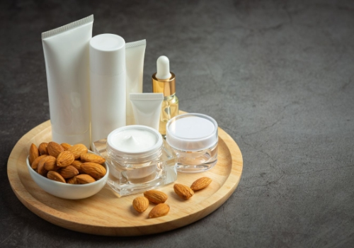

Industry Information
Aug. 19, 2025
Formulating a lotion or cream is never just about texture or actives—it’s about keeping the product stable, safe, and usable for months or even years. For personal care manufacturers, the real challenge often begins after the emulsion is built:
How do we preserve this formulation without compromising safety, regulatory compliance, or skin tolerance?
In today’s regulatory and consumer landscape, choosing safe cosmetic preservatives isn’t just a technical task—it’s a strategic one. From clean beauty claims to sensitive-skin certifications, what you select as your preservative system can impact everything from shelf life to market access.

All water-based cosmetic products are susceptible to microbial growth. Without an effective preservation system, lotions and creams become ideal environments for bacteria, yeast, and mold—especially under consumer usage conditions (wet fingers, room temperature, inconsistent closures).
While some formulators seek natural preservatives for lotion, others rely on tested synthetic options. In both cases, the goal remains the same: ensure safety over time, while maintaining product integrity and user experience.
The term safe cosmetic preservatives is often misunderstood. Safety depends not only on the ingredient itself, but also on:
Its concentration within the formulation
Its interaction with other ingredients (e.g., emulsifiers, pH adjusters)
Its toxicity profile, as defined by global regulatory bodies (EU, FDA, ASEAN, etc.)
Its sensory impact, especially for leave-on products
In real-world use, many preservatives that are technically “safe” can still cause issues—such as skin irritation or instability in complex formulas. That’s why context matters when selecting a system.
There’s growing demand for natural preservatives for lotion, especially among clean beauty brands. However, natural doesn’t always mean more effective—or safer.
Many “natural” preservatives (e.g., botanical extracts, essential oils) may offer mild antimicrobial activity, but often require:
Higher concentrations, which can affect texture or scent
Synergistic support, from chelators or antioxidants
Precise pH control, as many only function within narrow pH ranges
For example, Vitamin E is commonly used as an antioxidant in lotion formulas. While it’s not a true preservative, it can delay oxidation and improve overall formula stability when used alongside primary antimicrobial agents.
Choosing safe cosmetic preservatives involves more than just picking from a list. R&D and sourcing teams typically consider:
Consideration | Why It Matters |
Form Type | A surfactant-based cleanser may tolerate broader pH ranges than a serum or lotion |
Packaging | Pump vs jar formats change contamination risk and dosing consistency |
pH Range | Many preservatives work best within pH 3.5–6.5 |
Regulatory Zone | |
Consumer Labeling | "Paraben-free", "phenoxyethanol-free", or "preservative-free" may restrict your options |
These realities make the selection process complex—there is rarely a single best preservative for every product. Instead, teams often work toward a system of actives that complement each other.
Modern preservative strategies often include multi-component systems, combining primary preservatives with chelators, antioxidants, pH buffers, and even certain surfactant-type agents that support microbial resistance.
For example:
Alkyl Polyglucoside is a mild surfactant with skin-friendly properties and weak antimicrobial support. It can improve preservative spread in a formula.
Ceteareth-20, Cetyl Alcohol, and other emulsifying agents ensure stable texture and promote preservative uniformity within emulsions.
These functional ingredients don’t act as preservatives on their own, but help maximize the effectiveness of a broader preservation system—especially in formulations that use natural preservatives for lotion.
Whether you're developing a new formulation or updating an existing one to improve freshness, it's important to consider the whole picture—ingredient compatibility, regulatory requirements, and consumer expectations. A balanced preservation strategy, complemented by the right functional ingredients, helps ensure product safety and performance.
GOLIATH's formulators can guide you through these decisions and offer a wide range of compatible ingredients, from emulsifiers to antioxidants, to support your freshness goals.

Goliath Ingredients Holding Limited
1st Floor, Ellen Skelton Building, 3076 Sir Francis Drake’s Highway, Road Town, Tortola, VG1110, British Virgin Islands.
henry@goliathholding.com
Navigation
Email: henry@goliathholding.com